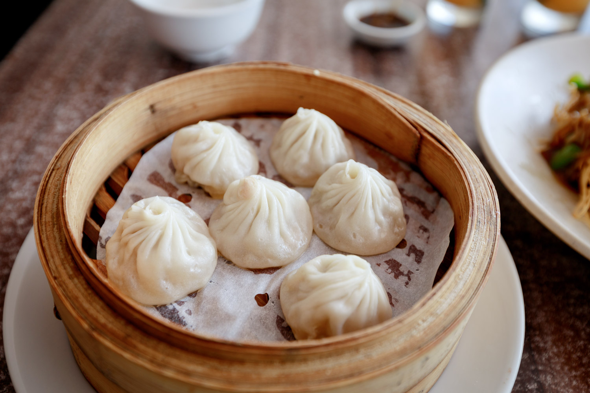

Home
小笼包 (Soup Dumplings)

Dumplings with soup inside very yummy yummy
Ingredients
- ½ lb pork skin (225g), cut into 1-inch strips
- 1 lb (450g) pork neck bones
- Water
- 2 slices of ginger
- Scallion
Steps
- In a small pot, add the pork skin and pork bones and cover with cold water. Bring to a rolling boil, and immediately drain and rinse off the bones and the skin
- Rinse out the pot and put everything back in. Add 4 cups (950 ml) of water along with the ginger, scallion and wine. Bring the pot to a boil and then reduce the heat to low. Cover and simmer for 2 hours.
- After 2 hours, turn off the heat, allow the soup to cool, and strain the liquid into a bowl.
- Once the liquid is completely cooled, cover and refrigerate overnight.
- etc